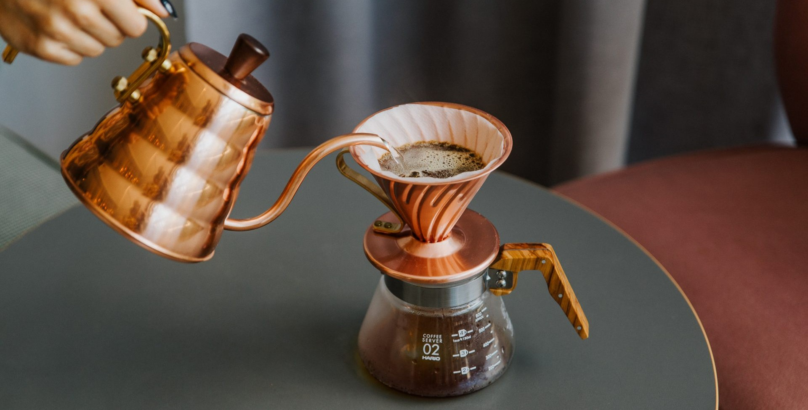

The V60

The Hario V60 is an elegant brewer for those who want to perfect the pour. It's great for folks who are looking for complete control over brewing extraction. The key here is to pour slow. The entire brew process for a 10oz mug takes about three minutes.
Learn how to brew
Back to homepage